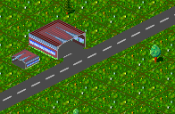

Straßendepots können nur auf den Enden eigener Straßen gebaut werden. Z.B. das Ende der kleinen Sackgasse aus dem linken Bild wäre ein geeignter Platz für ein Straßendepot. Um dort ein Straßendepot zu bauen, genügt es, das Feld mit dem Straßendepotbauwerkzeug anzuklicken. Das Programm abut dann auf dem Feld ein Straßendepot, wie es im rechten Bild gezeigt wird.
|  |
von Hansjörg Malthaner
EMail: hansjoerg.malthaner@gmx.net